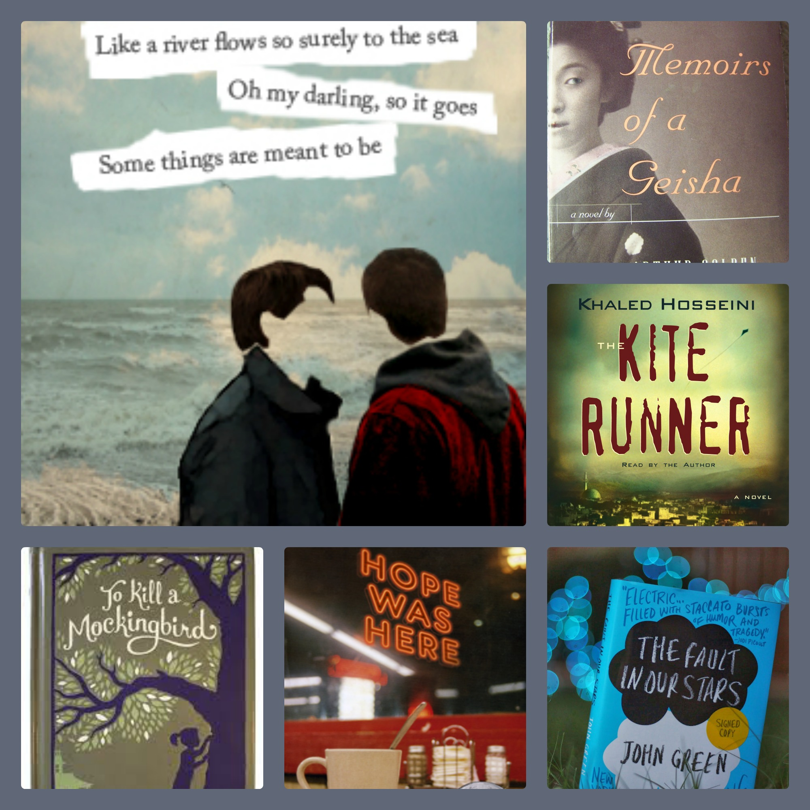
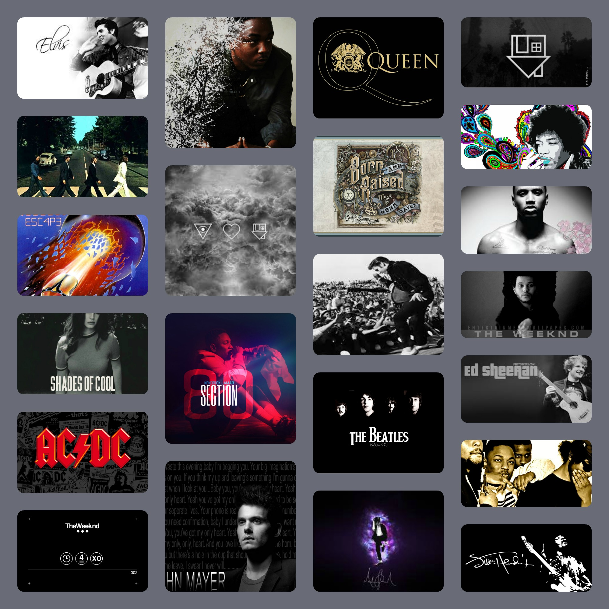

I like to read all the time. I read about anything. Reading is always part of my daily life. I like to read because I can learn about other people's experiences and thoughts. I also like to read because it can help me in school and in my writing. I feel like when I read, I'm a mind reader, because I read the thoughts of others. To me, reading is good pass time. When I read, I escape to another world, where everything is different.

Music is a daily thing for me. To me, it's like coffee; I have to listen to music to be fully awake. I don't make my own music or play an instrument or sing, but I feel like I have to appreciate music. I can listen to other people be creative. I listen to music whenever I do anything; homework, chores, and walking to school.